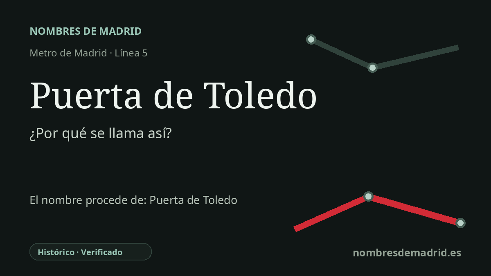

Publicado el · Investigación de Nombres de Madrid · Cómo verificamos cada origen · 6 fuentes consultadas
Respuesta rápida
La estación Puerta de Toledo toma su nombre de la puerta monumental situada sobre ella, un arco triunfal neoclásico concluido en 1827 en la entrada sur de Madrid. Su historia es especialmente compleja: sustituyó a puertas de Toledo anteriores y pasó de un proyecto de época napoleónica a un monumento a Fernando VII y a la victoria española sobre la Francia napoleónica.
La historia del nombre
La estación de Metro toma su nombre directamente de la Puerta de Toledo, la puerta monumental situada en la Glorieta de la Puerta de Toledo. La relación con el transporte es clara: el CRTM sitúa el acceso de la estación en esa misma glorieta, y la línea 5 da servicio a esta parada desde la apertura del tramo inicial Callao-Carabanchel en junio de 1968.
El nombre viene de mucho antes que el Metro y remite a la antigua entrada meridional de Madrid. La Puerta de Toledo actual sustituyó a otras puertas anteriores con el mismo nombre, situadas en las cercanías desde al menos el siglo XVI, que señalaban el camino hacia Toledo y el sur. En su forma actual no es tanto una puerta defensiva como un arco triunfal neoclásico, construido con granito y piedra de Colmenar.
Su historia política es más compleja que la de un simple monumento regio. Durante el reinado de José Bonaparte se encargó a Silvestre Pérez, entre 1811 y 1812, un arco triunfal anterior que no llegó a materializarse. Tras la salida de los franceses de Madrid, el Ayuntamiento encargó a Antonio López Aguado en 1813 la puerta actual, vinculada inicialmente a la Soberanía Nacional y al momento constitucional de Cádiz. Con el regreso de Fernando VII y la restauración absolutista, el programa simbólico se reorientó hacia el rey y la derrota de la Francia napoleónica.
Esa tensión sigue formando parte de la lectura del monumento. Las inscripciones superiores presentan la puerta de 1827 como una ofrenda a Fernando VII, mientras las fuentes patrimoniales municipales describen episodios en los que ejemplares de la Constitución de Bayona y de la Constitución de Cádiz, junto con monedas, fueron introducidos y retirados de una caja conmemorativa de la construcción. La decoración escultórica fue diseñada por José Ginés y finalmente labrada por Ramón Barba y Valeriano Salvatierra, con imágenes de la monarquía española, la victoria militar y la Villa de Madrid.
Por tanto, el nombre de la estación está bien documentado como topónimo histórico: remite a la Puerta de Toledo conservada, no a una persona llamada Toledo. El proyecto de José Bonaparte fue un antecedente no ejecutado; la puerta actual fue la obra de Antonio López Aguado entre 1813 y 1827, se inauguró oficialmente en 1827 y hoy está protegida como Bien de Interés Cultural.